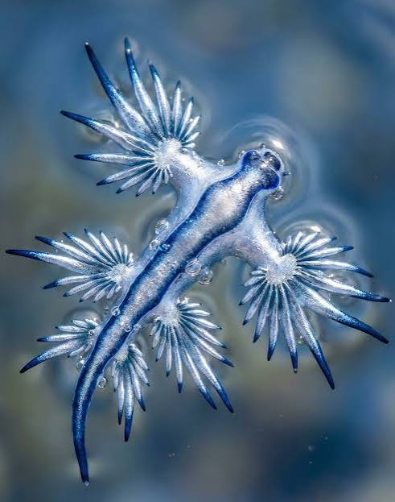
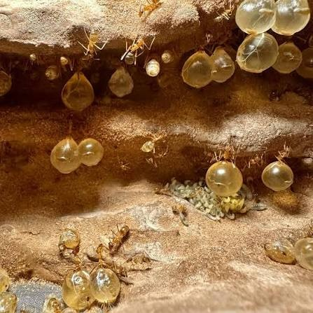
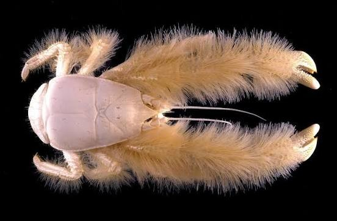
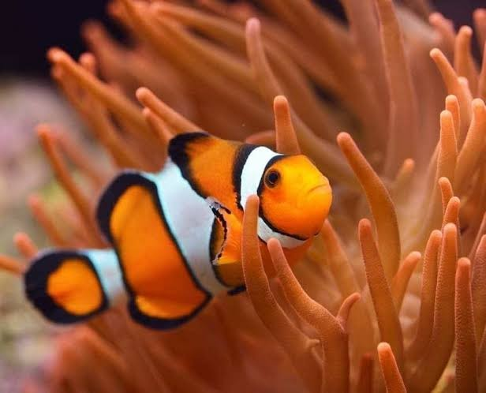

Abilities
Blue Dragon Sea Slug

The blue dragon sea slug (Glaucus atlanticus) is a stunning marine creature found floating upside down on the surface of warm oceans around the world. Despite its tiny size and beautiful blue appearance, this unusual predator possesses an extraordinary ability: it can steal the weapons of its prey! By feeding on venomous creatures such as the Portuguese man o' war, the blue dragon collects their stinging cells and stores them in specialized sacs within its finger-like appendages. It can then use these stolen stingers to defend itself against predators. With its dragon-like appearance and ability to turn another creature's weapons into its own, the blue dragon seems like something straight out of science fiction!
Honeypot Ant

The honeypot ant (Myrmecocystus species) certain workers, called repletes, act as living food-storage containers for their colonies. These specialized ants consume large amounts of sugary liquid, causing their abdomens to swell to several times their normal size. They then hang from the ceilings of underground chambers, storing food until other ants need it. When food becomes scarce, colony members encourage the repletes to regurgitate their stored liquid, effectively turning them into living vending machines.
Yeti Crab

The yeti crab (Kiwa species) is a bizarre deep-sea crustacean found near hydrothermal vents and cold seeps on the ocean floor. Named for the thick, hair-like bristles covering parts of its body, this unusual creature possesses an extraordinary ability: it farms bacteria on itself! These specialized bristles provide a home for colonies of bacteria that can use chemicals from the surrounding environment to produce nutrients. Some yeti crabs even wave their hairy claws through mineral-rich water to help cultivate their microscopic partners. By harvesting these bacteria for food, yeti crabs have developed a remarkable way to survive in the dark depths of the ocean.
Clownfish

The clownfish (Amphiprion species) is a colorful tropical fish found among the coral reefs of the Indian and Pacific Oceans. Although it appears harmless, this small fish possesses two remarkable biological adaptations. First, a specialized mucus coating helps protect it from the stinging tentacles of sea anemones, allowing it to live safely among creatures that would injure many other fish. Even more surprisingly, clownfish can change their sex! All clownfish begin life as males or immature fish, and when the dominant female dies, the breeding male can transform into a female and take her place. With its unusual partnership with sea anemones and ability to change its own biology, the clownfish demonstrates just how extraordinary life beneath the ocean can be! That process is what finding nemo was about!